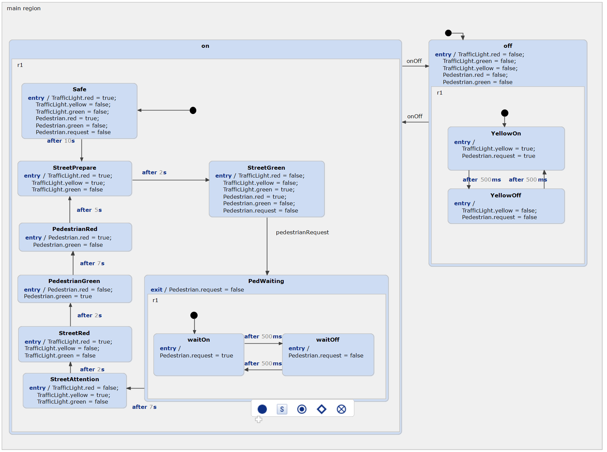
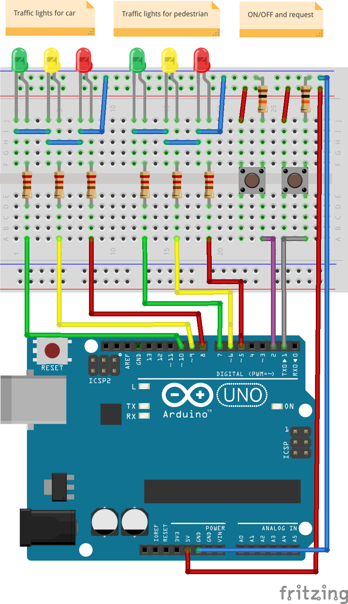

Based on the standard traffic light example, this project shows how to use a statechart to develop software for the Arduino platform.

More information about the statechart itself can be found in the standard traffic light example, which should be considered first. In summary, we have two traffic lights: one for the traffic on the street, and one for pedestrians who want to cross the street. They can push a button to request their traffic light to turn green, which activates a blinking wait-light first. The street's traffic light then goes through the standard procedure, turning on the yellow light, followed by the red light, allowing the pedestrians to cross safely. After some time, the pedestrians' traffic light turns red again, and the cars are allowed to pass until the next request is made by a pedestrian.
Additionally, the traffic light can be switched off completely. This turns the yellow lights into a blinking mode, signaling that the traffic light is indeed switched off and that the street should be crossed in a careful manner.
This video shows how the state machine runs on the example:

The correct pins can be found in the arduinoPins.h file.
Get your parts ready! You will need:
Of course, you can change the pins, but since this represents the pin numbers in the software, don't forget to change them as well.
All Arduino examples can be compiled via command line or be imported into the Arduino IDE. An easier way is using the Sloeber plugin , which allows you to compile and upload the code directly in Statechart Tools.
There are two ways of how to install the plugin. The easiest way is using our example wizard, which allows you installing required plugins. Just follow the built-in instructions.
Another way is installing the plugin manually. You need to follow these steps:
After the installation you should notice a new Toolbar, which allows you to compile and flash your Arduino. Initially, the projects are not configured, as you may require to add the toolchain:
Finally, you can use the green toolbar for compiling and flashing the Arduino. Have fun!